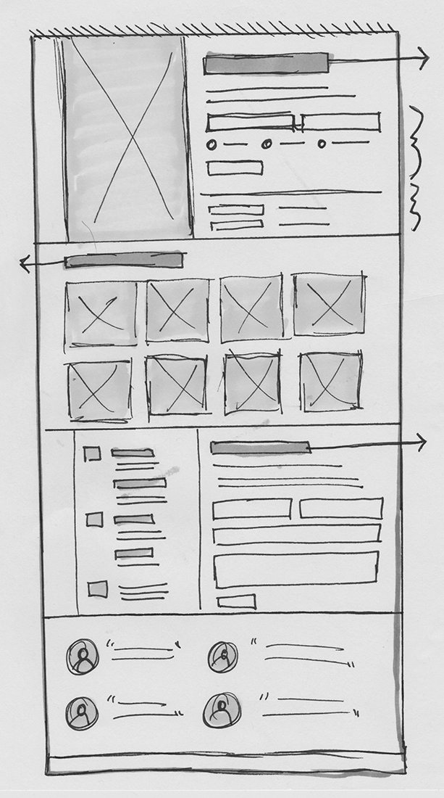

Stremler Gravel: In Progress
Web Design | Front End Development
About the Project:
Stremler Gravel is a family run company in Lynden, Washington. They approached me about creating a website for them as they didn't have one at the time. The Stremlers wanted to be set apart from their competition and allow customers to interact with their site and gain information about the company. This will eventually be transformed into a Wordpress to allow the company to update their content as they please.

Design Elements:
Font-Family: Lato
a b c d e f g h i j k l m n o p q r s t u v w x y z
Information Architecture
I organized the website's content by determing what was going to be in each 'section' of the website based on the requests of the client. In this step, I also make notes about the content that will go within each area.

Layout & Sketches
Based on the information architecture, I begin wireframing the pages and layout out where the content belongs on the page. The wireframes were updated as we made changes to the page content. I like to put all of my ideas and changes on paper as I work so I'm able to revisit them later.

